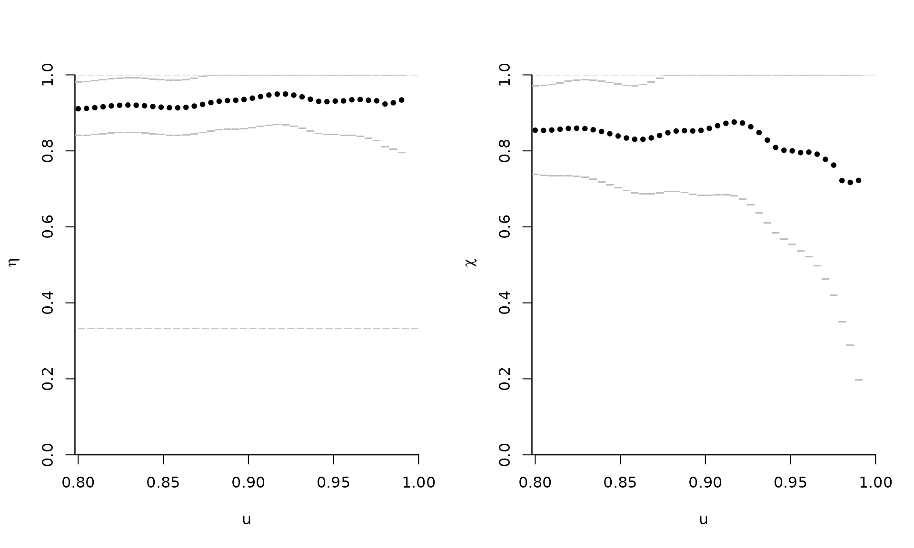
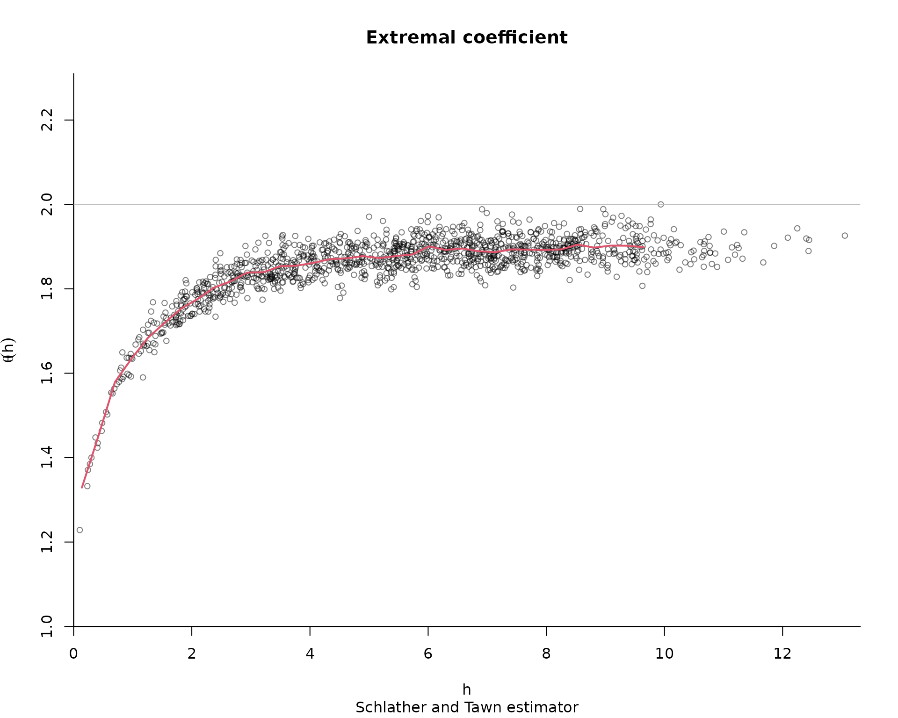

Simulation of multivariate extreme value distributions and processes
Léo Belzile
2025-09-30
Source:vignettes/04-simulation.Rmd
04-simulation.RmdThis vignette discusses unconditional simulation of extreme value
processes, showcasing the functions provided by mev for
this. A very quick spatial analysis is also performed using weighted
least squares.
Theory and models
Max-stable processes
Let be a compact subset of . The de Haan spectral representation (Haan 1984) of simple max-stable processes is (Schlather and Tawn 2003) where is a stochastic process satisfying for any and is a Poisson point process with intensity function . Max-stable processes arise as the pointwise maximum of an infinite collection of random functions .
The distribution function of a -dimensional max-stable vector can be defined in terms of a measure , termed exponent measure, defined on viz. It follows from max-stability that the exponent measure is homogeneous of order .
R-Pareto processes and generalizations
Let denote the set of continuous non-negative non-null functions. A risk functional is a continuous functional which is homogeneous of order , i.e., for and . Examples include maxima, , minima, , sums and projections . A -Pareto process admits the stochastic representation [Ferreira and de Haan (2014)](Dombry and Ribatet 2015) for a unit Pareto random variable with survival function for and a stochastic process , independent of , with sample paths in and where and is a norm. -Pareto processes come about when looking at the limit distribution of -exceedances, i.e. for a large threshold , assuming unit Frechet margins. This can be achieved in practice by standardizing the margins, but with the drawback that the exceedances are defined on the transformed scale.
de Fondeville (2018) lifts this assumption and define generalized -Pareto processes, allowing for different location and scale marginal parameters (but with a common shape parameter). The risk region in which extreme observations lie is where is a location function and is a scale function. The probability measure of over is . The stochastic representation of the generalized -Pareto vector is where is a -Pareto process. When is , the finite-dimensional distributions are multivariate generalized Pareto (Rootzén, Segers, and Wadsworth 2018).
Simulation algorithms
The original goal of the mev package was to implement
the algorithm of Dombry, Engelke, and Oesting
(2016), in order to perform exact simulation from max-stable
vectors by sampling each extremal function in turn. Since then, other
algorithms for simulating from standard
-Pareto
processes and generalized
-Pareto
processes have been added to the package. These are based on
accept-reject method or composition sampling and can be slow in high
dimensions. Note that packages such as RandomFields and
SpatialExtremes are tailored for spatial processes and
include more efficient algorithms to sample the (log-)Gaussian
components appearing in the Brown–Resnick and extremal Student models,
which makes them typically faster. The vignette provides details about
the parametrization of the models implemented in mev.
The various functions of interest for simulation include
-
rmev, which is the workshorse for simulating max-stable random vectors; -
rmevspecreturns samples from the angular distribution defined with respect to the norm; -
rparpfor simulating -Pareto processes through accept-reject; -
rparpcsfor simulating -Pareto processes using composition sampling, e.g. Ho and Dombry (2019) -
rgparpfor simulating generalized -Pareto processes using accept-reject.
This approach is only available for Brown–Resnick and extremal Student processes and is more computationally intensive since it requires computing numerically mixture weights. However, these need only be computed once and this approach is more efficient for simlating large samples, particularly in cases where the acceptance rate is very low (notably if ).
Let’s start by simulating from a simple max-stable random vector from the negative logistic model. The margins are unit Frechet, and we can verify this by pooling the observations and fitting a generalized extreme value distribution to the sample. The parameter estimates are correct, and a probability-probability plot shows that the .
If
is a max-stable vector of size
with standard Gumbel margins, with distribution function
,
then for any subset of size
,
the variable
has distribution function
,
where
and
.
This follows from the homogeneity of the exponent measure. Gabda et al. (2012) propose a
probability-probability plot based on fitting
through maximum likelihood with the parameter constraints for each set
of
stations. The data are obtained by pooling replications of the
max-stable field and selecting all subsets of size
if
is small, or else a limited number of stations among those that display
the higher dependence so as to maximize the power of the test
(independence being a special case of max-stability). Uncertainty
quantification is performed using a nonparametric bootstrap. The
function test.maxstab implements this for the special case
.
library(mev)
set.seed(0)
samp <- rmev(
n = 1000,
d = 5,
param = 0.1,
model = "neglog"
)
fgev <- fit.gev(c(samp), show = FALSE)
fgev$estimate## loc scale shape
## 0.9954939 0.9919429 0.9867670
par(mfrow = c(1, 2))
# Test of max-stability
test.maxstab(xdat = samp)
# Probability-probability plot
plot(fgev, which = "pp", main = "")
The likelihood of max-stable processes is untractable, so inference
is typically performed using composite likelihood. The package
evd includes routines for doing this in the bivariate
setting (see fbvpot).
Consider a collection of independent and identically distributed
vectors
with continuous marginal distributions that are in the max-domain of
attraction of a max-stable distribution with limit measure
.
One can transform the observations
into pseudo-uniform samples using the empirical distribution function or
else the semi-parametric estimator,
(see spunif).
We can back-transform the pseudo-uniform samples
to unit Pareto using the quantile transform,
.
If we map the random vector
to pseudo-polar coordinates,
from
,
where
is the
-simplex.
The measure
factorizes as a product measure
with angular measure
,
a probability measure satisfying the moment constraint
for
;
this moment constraint holds for any
,
whereas it will be measure dependent if the radial measure is not
(Einmahl and Segers 2009). We can thus
create an approximate sample
from the angular measure
and estimate its distribution non-parametrically as
where the weights
are obtained as the solution of either the empirical or Euclidean
likelihood problems with a mean constraint Einmahl and Segers (2009). Since the resulting
spectral distribution is discrete (which is problematic in simulations),
Carvalho et al. (2013) suggest fitting a
Dirichlet kernel to observations, with parameters
subject to the constraint
.
The’bandwidth’ tuning parameter
is chosen via cross-validation. The function angmeasdir
fits Euclidean likelihood and returns a list with the weights vector
wts, the cross-validation parameter nu and a
matrix of parameters for the Dirichlet distribution.
Alternatively, we can estimate the limiting spectral measure from the
pseudo-observations enforcing the mean constraint using empirical
likelihood, as proposed by Einmahl and Segers
(2009). The function angmeas computes the weights
associated to each observations.
samp <-
rmev(
n = 1000,
d = 3,
param = c(0.4, 0.6, 2.9, 0.1),
model = "sdir"
)
taildep(samp, method = list(eta = "betacop", chi = "betacop"))
# Plot the probability weights and compute the column mean
nparangmeas <- mev::angmeas(samp, th = 0.5)
plot(nparangmeas$wts,
ylab = "weights",
xlab = "observation index")
abline(h = 1 / nrow(nparangmeas$ang))
colSums(nparangmeas$wts * nparangmeas$ang)## [1] 0.3333333 0.3333333
dirangmeas <- mev::angmeasdir(samp, th = 0.5)Extremal coefficient
As in SpatialExtremes, we can use the nonparametric
estimates of the extremal coefficient as goodness-of-fit diagnostic. The
following code samples data
coord <- 10 * cbind(runif(50), runif(50))
di <- as.matrix(dist(coord))
dat <-
rmev(
n = 1000,
d = 100,
param = 3,
sigma = exp(-di / 2),
model = 'xstud'
)
res <- extcoef(dat = dat, coord = coord)
# Extremal Student extremal coefficient function
XT.extcoeffun <- function(h, nu, corrfun, ...) {
if (!is.function(corrfun)) {
stop('Invalid function `corrfun`.')
}
h <- unique(as.vector(h))
rhoh <- sapply(h, corrfun, ...)
cbind(h = h, extcoef = 2 * pt(sqrt((nu + 1) * (1 - rhoh) / (1 + rhoh)), nu +
1))
}
#This time, only one graph with theoretical extremal coef
plot(
res$dist,
res$extcoef,
ylim = c(1, 2),
pch = 20,
ylab = "extremal coefficient",
xlab = "distance"
)
extcoefxt <- XT.extcoeffun(
seq(0, max(res$dist), by = 0.1),
nu = 3,
corrfun = function(x) {
exp(-x / 2)
}
)
lines(extcoefxt[, 'h'],
extcoefxt[, 'extcoef'],
type = 'l',
col = 'blue',
lwd = 2)Generalized R-Pareto processes for functional threshold exceedances
We simulate a spatial generalized -Pareto process.
lon <- seq(650, 720, length = 50)
lat <- seq(215, 290, length = 50)
# Create a grid
grid <- expand.grid(lon, lat)
coord <- as.matrix(grid)
dianiso <- distg(coord, 1.5, 0.5)
sgrid <- scale(grid, scale = FALSE)
# Specify marginal parameters `loc` and `scale` over grid
eta <- 26 + 0.05 * sgrid[, 1] - 0.16 * sgrid[, 2]
tau <- 9 + 0.05 * sgrid[, 1] - 0.04 * sgrid[, 2]
# Parameter matrix of Huesler--Reiss
# associated to power variogram
Lambda <- ((dianiso / 30) ^ 0.7) / 4
# Simulate generalized max-Pareto field above u=50
set.seed(345)
simu1 <- rgparp(
n = 1,
thresh = 50,
shape = 0.1,
riskf = "max",
scale = tau,
loc = eta,
sigma = Lambda,
model = "hr"
)
# The same, but conditional on an exceedance at a site
simu2 <- rgparp(
n = 1,
thresh = 50,
shape = 0.1,
riskf = "site",
siteindex = 1225,
scale = tau,
loc = eta,
sigma = Lambda,
model = "hr"
)
#Plot the generalized max-Pareto field
par(mfrow = c(1, 2))
fields::quilt.plot(grid[, 1], grid[, 2], simu1, nx = 50, ny = 50)
SpatialExtremes::swiss(add = TRUE)
fields::quilt.plot(grid[, 1], grid[, 2], simu2, nx = 50, ny = 50)
SpatialExtremes::swiss(add = TRUE)
# Value at conditioning coordinate should be greater than 50
simu2[1225]## [1] 84.81661The code snippet below fits a Brown–Resnick model with power variogram to simulated data from the same model (based on more than one replicate). The parameters are estimated by minimizing the squared distance between empirical cloud of pairwise conditional probability of exceedance and the theoretical one. We include geometric anisotropy in the analysis.
lon <- seq(650, 720, length = 10)
lat <- seq(215, 290, length = 10)
# Create a grid
grid <- expand.grid(lon, lat)
coord <- as.matrix(grid)
dianiso <- distg(coord, 1.5, 0.5)
sgrid <- scale(grid, scale = FALSE)
# Specify marginal parameters `loc` and `scale` over grid
eta <- 26 + 0.05 * sgrid[, 1] - 0.16 * sgrid[, 2]
tau <- 9 + 0.05 * sgrid[, 1] - 0.04 * sgrid[, 2]
# Parameter matrix of Huesler--Reiss
# associated to power variogram
Lambda <- ((dianiso / 30) ^ 0.7) / 4
# Simulate generalized max-Pareto field above u=50
set.seed(345)
simu1 <- rgparp(
n = 1000,
thresh = 50,
shape = 0.1,
riskf = "max",
scale = tau,
loc = eta,
sigma = Lambda,
model = "hr"
)
extdat <- extremo(
dat = simu1,
margp = 0.9,
coord = coord,
scale = 1.5,
rho = 0.5,
plot = TRUE
)
# Constrained optimization
# Minimize distance between extremal coefficient from fitted variogram
mindistpvario <- function(par, emp, coord) {
alpha <-
par[1]
if (!isTRUE(all(alpha > 0, alpha < 2))) {
return(1e10)
}
scale <- par[2]
if (scale <= 0) {
return(1e10)
}
a <- par[3]
if (a < 1) {
return(1e10)
}
rho <- par[4]
if (abs(rho) >= pi / 2) {
return(1e10)
}
semivariomat <-
power.vario(distg(coord, a, rho), alpha = alpha, scale = scale)
sum((2 * (1 - pnorm(
sqrt(semivariomat[lower.tri(semivariomat)] / 2)
)) - emp) ^ 2)
}
# constrained optimization for the parameters
hin <- function(par, ...) {
c(1.99 - par[1],
-1e-5 + par[1],
-1e-5 + par[2],
par[3] - 1,
pi / 2 - par[4],
par[4] + pi / 2)
}
opt <- alabama::auglag(
par = c(0.5, 30, 1.5, 0.5),
hin = hin,
control.optim = list(parscale = c(0.5, 30, 1.5, 0.5)),
fn = function(par) {
mindistpvario(par, emp = extdat[, 'prob'], coord = coord)
}
)## Min(hin): 0.49999
## Outer iteration: 1
## Min(hin): 0.49999
## par: 0.5 30 1.5 0.5
## fval = 77.37
##
## Outer iteration: 2
## Min(hin): 0.3992261
## par: 0.668296 74.8862 1.39923 0.556808
## fval = 6.52
##
## Outer iteration: 3
## Min(hin): 0.3992502
## par: 0.668285 74.8855 1.39925 0.556807
## fval = 6.52
##
stopifnot(opt$kkt1, opt$kkt2)
# Plotting the extremogram in the deformed space
distfa <- distg(loc = coord, opt$par[3], opt$par[4])
plot(
c(distfa[lower.tri(distfa)]),
extdat[, 2],
pch = 20,
col = scales::alpha(1, 0.1),
yaxs = "i",
xaxs = "i",
bty = 'l',
xlab = "distance",
ylab = "cond. prob. of exceedance",
ylim = c(0, 1)
)
lines(
x = (distvec <- seq(0, 200, length = 1000)),
col = 2,
lwd = 2,
2 * (1 - pnorm(sqrt(
power.vario(distvec, alpha = opt$par[1], scale = opt$par[2]) / 2
)))
)Exercice
- Simulate Gaussian random vector (using, e.g., the function
mvrnormor through the packageRandomFields) with independent observations and vectors with covariance matrix for . Usemaxstabteston your simulated data and comment on the diagnostic plots. - Simulate 100 realizaions from a
-Pareto
process with risk function
and
for the Brown–Resnick model with power variogram function
power.variowith shapealpha = 1andscale = 2on a grid usingrparpandrparpcs. Benchmark the two methods: which is fastest and what is the acceptance rate of the accept-reject?
Partial sample code for doing this is given below:
grid <- as.matrix(expand.grid(1:5, 1:5))
depmat <-
power.vario(h = distg(grid, scale = 1, rho = 0),
alpha = 1,
scale = 2) / 4
# This is where composition sampling shines!
samp <- rparpcs(
n = 1000,
shape = 0.1,
riskf = "min",
Lambda = depmat,
model = "br"
)
#rparp is computationally intensive with "min" - only for
samp2 <- rparp(
n = 1000,
shape = 0.1,
riskf = "max",
sigma = depmat,
model = "hr"
)